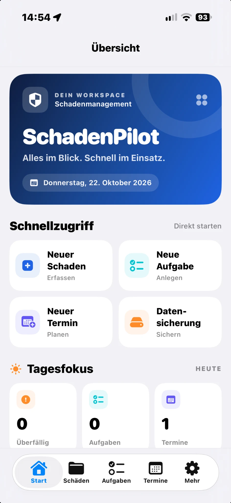
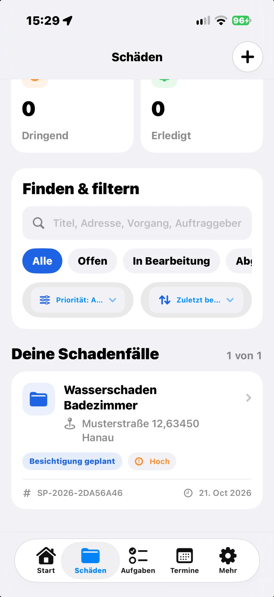
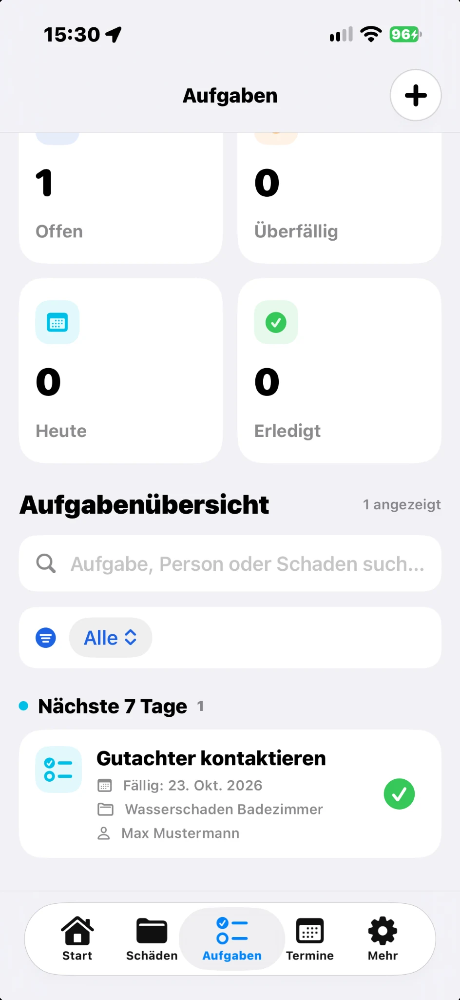

Die Bedienungsanleitung.
Alle Funktionen einfach erklärt – vom ersten Schadensfall über Fotos, 3D-Scans und PDF-Berichte bis zur Zusammenarbeit im Team. Für iPhone und iPad.
Wonach suchst du?
Wähle ein Kapitel oder suche nach einem Begriff. Die vollständige Anleitung ist außerdem direkt in der App unter Mehr → Hilfe & Bedienungsanleitung auch offline verfügbar.



01 · Schnellstart
- Öffne Start und wähle „Neuen Schaden erfassen“.
- Trage Titel, Betroffen, Schadenart und Umfang ein. Ein Foto ist optional.
- Speichere den Schaden und öffne ihn unter Schäden.
- Ergänze Fotos, Maßnahmen, Aufgaben oder Termine.
- Erstelle bei Bedarf unter „Schadenbericht (PDF)“ einen Bericht.
Die Hauptbereiche heißen Start, Schäden, Aufgaben, Termine und Mehr. Die normale Dokumentation funktioniert ohne LiDAR-Hardware.
02 · Schadensfälle erstellen und bearbeiten
- Unter Start oder Schäden einen neuen Fall beginnen.
- Eine kurze, eindeutige Bezeichnung vergeben – etwa „Wasserschaden Küche“.
- „Betroffen“, Schadenart, Umfang und gegebenenfalls Maßnahme auswählen.
- Speichern und später unter Schäden erneut öffnen.
- Angaben, Status oder Priorität ändern und oben rechts speichern.
03 · Fotos aufnehmen und markieren
- Einen Schadensfall öffnen und den Bereich Fotos auswählen.
- Ein neues Foto aufnehmen oder aus der Mediathek hinzufügen.
- Optional Raum, Aufnahmephase und Notizen ergänzen.
- Schadenstellen mit der Markierungsfunktion hervorheben und speichern.
- Die Markierungen vor der PDF-Erstellung kontrollieren.
04 · LiDAR, Raumkarten und Schadenspunkte
- Auf einem LiDAR-fähigen iPhone oder iPad die LiDAR-Funktion des Schadensfalls öffnen.
- Einen Raum scannen oder eine bestehende Raumkarte öffnen.
- Den Scan speichern, die Schadensstelle in 2D oder 3D markieren und die Markierung sichern.
- Zur Teamfreigabe anschließend „Fotos und LiDAR bereitstellen / aktualisieren“ wählen.
05 · PDF-Schadenberichte
- Den Schadensfall öffnen und „Schadenbericht (PDF)“ wählen.
- Den vollständigen Bericht erstellen und die Vorschau überprüfen.
- Über das Teilen-Menü das PDF speichern oder versenden.
- Für Teammitglieder die gespeicherte Datei über „Mit Team teilen → Vollständigen PDF-Bericht bereitstellen“ separat hochladen.
06 · Aufgaben, Termine und Erinnerungen
- Unter Aufgaben oder Termine einen Eintrag erstellen.
- Titel, Fälligkeit, gegebenenfalls Zuständigkeit und Notiz eingeben.
- Den Eintrag optional einem Schadensfall zuordnen.
- Speichern und bei Bedarf eine lokale Erinnerung aktivieren.
- Unter Mehr → Benachrichtigungen geplante Mitteilungen prüfen.
07 · Einen Schadensfall im Team teilen
- Auf dem Eigentümergerät einen Fall unter Schäden öffnen.
- „Mit Team teilen“ wählen und die CloudKit-Freigabe vorbereiten.
- Den Einladungslink an die gewünschte Apple-ID senden.
- Das Teammitglied nimmt die Einladung an und öffnet den Fall unter Schäden.
- Später hinzugefügte Fotos, LiDAR-Dateien und vollständige PDFs separat freigeben.
08 · Teamänderungen abgleichen
Vom Team zum Eigentümer
- Auf dem zweiten Gerät Angaben bearbeiten und „Änderungen im Team speichern“ wählen.
- Auf dem Eigentümergerät „Mit Team teilen → Teamänderungen laden“ öffnen.
- Die abweichenden Werte sorgfältig vergleichen.
- Erst danach „Teamänderungen in meine Akte übernehmen“ bestätigen.
Vom Eigentümer zum Team
- Zunächst den aktuellen Teamstand laden und prüfen.
- Eigene Angaben lokal speichern.
- „Meine aktuellen Angaben ans Team senden“ bestätigen.
- Auf dem Teamgerät den Stand erneut aktualisieren.
09 · Zentrale Mitarbeiterverwaltung
- Mehr → Team-Synchronisierung öffnen.
- „Mitarbeiter & Zugriffe verwalten“ auswählen.
- Freigegebene Fälle und eingeladene Teilnehmer samt Status ansehen.
- Bei einem Fall „Freigabe verwalten“ öffnen.
- Dort weitere Personen hinzufügen, Berechtigungen kontrollieren oder Teilnehmer verwalten.
10 · Datensicherung und Wiederherstellung
- Unter Mehr → Datensicherung den verschlüsselten Export öffnen.
- Ein sicheres Passwort eingeben und die Sicherung erstellen.
- Die erzeugte Sicherungsdatei über Dateien oder iCloud Drive sicher ablegen.
- Zur Wiederherstellung die Datei auswählen, Passwort eingeben und den Prüfbericht lesen.
- Fehlende Einträge nur nach Prüfung ergänzen und die wiederhergestellten Inhalte stichprobenartig kontrollieren.
11 · Kostenlos und PRO
- Die ersten fünf Schadensfälle sind kostenlos.
- Mehr → App-Einstellungen → Freischaltung öffnen.
- Den angezeigten App-Store-Preis prüfen und „Dauerhaft freischalten“ wählen.
- Den Einmalkauf bei Apple abschließen – kein Abonnement.
- Bei einem Gerätewechsel „Käufe wiederherstellen“ mit demselben Apple-Account verwenden.
12 · Häufige Fragen & Problemlösungen
Der Teamfall fehlt
Prüfe den eingeladenen Apple-Account, die angenommene Freigabe und aktualisiere die Schäden-Ansicht.
Meine Änderung ist auf Handy 1 nicht sichtbar
Auf Handy 2 „Änderungen im Team speichern“ wählen; auf Handy 1 „Teamänderungen laden“, vergleichen und bewusst übernehmen.
Fotos, LiDAR oder vollständiger PDF-Bericht fehlen
Diese Anhänge müssen auf dem Eigentümergerät gesondert bereitgestellt beziehungsweise aktualisiert werden.
CloudKit zeigt eine Fehlermeldung
Internetverbindung und iCloud-Anmeldung prüfen. Den genauen Fehler notieren und bestehende Freigaben nicht vorschnell löschen.
Wo bekomme ich persönliche Hilfe?
Per E-Mail an info@vooro.de.